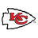
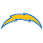
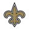
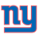

2021 Schedule
The Philadelphia Eagles' 2021 Schedule is presented to you by Draft Kings Sportsbook. Download the Draft Kings Sportsbook App to make your 2021 NFL season much more memorable! Game lines and odds (as of 07/28/2021) are posted as part of the schedule for your betting entertainment purposes. Please gamble responsibly.1
Preseason Schedule:
| Date | Time | Opponent | Line* | Odds* |
|---|---|---|---|---|
| Aug 12 | 7:30 PM |  Pittsburgh Steelers Pittsburgh Steelers |
N/A | N/A |
| Aug 19 | 7:30 PM |  New England Patriots New England Patriots |
N/A | N/A |
| Aug 27 | 7:30 PM |  @ New York Jets @ New York Jets |
N/A | N/A |
* Draft Kings Sportsbook does not provide lines and odds on NFL preseason games.
Regular Season Schedule:
| Date | Time | Opponent | Line | Odds |
|---|---|---|---|---|
| Sep 12 | 1:00 PM |  @ Atlanta Falcons @ Atlanta Falcons |
+3.5 | -115 |
| Sep 19 | 1:00 PM | San Francisco 49ers | +4 | -105 |
| Sep 27 | 8:15 PM |  @ Dallas Cowboys @ Dallas Cowboys |
+6 | -110 |
| Oct 03 | 1:00 PM | Kansas City Chiefs | +8.5 | -110 |
| Oct 10 | 1:00 PM |  @ Carolina Panthers @ Carolina Panthers |
+3 | -110 |
| Oct 14 | 8:20 PM |  Tampa Bay Buccaneers Tampa Bay Buccaneers |
+7.5 | -110 |
| Oct 24 | 4:05 PM |  @ Las Vegas Raiders @ Las Vegas Raiders |
+3.5 | -110 |
| Oct 31 | 1:00 PM |  @ Detroit Lions @ Detroit Lions |
-1 | -110 |
| Nov 07 | 4:05 PM | Los Angeles Chargers | +2 | -110 |
| Nov 14 | 4:25 PM |  @ Denver Broncos @ Denver Broncos |
+5.5 | -110 |
| Nov 21 | 1:00 PM | New Orleans Saints | +3.5 | -110 |
| Nov 28 | 1:00 PM | @ New York Giants | +3 | -110 |
| Dec 05 | 1:00 PM | @ New York Jets |
+1.5 | -110 |
| Dec 19 | TBD |  Washington Football Team Washington Football Team |
-1.5 | -110 |
| Dec 26 | 1:00 PM | New York Giants | -1.5 | -110 |
| Jan 02 | 1:00 PM | @ Washington Football Team |
+3.5 | -110 |
| Jan 09 | 1:00 PM | Dallas Cowboys |
+4.5 | -110 |
Explanation of Lines: A line represents the spread of points by which a team is expected to win or lose. A line of -3 means the team is favored to win by at least three points, and a line of +3 means a team is expected to lose by at least three points. A winning bet means that the team has outperformed the line that was bet on. For example, a team must win by more than three points to win a -3 bet. A team must lose by less than three points (or outright win) to win a bet of +3. A bet is considered a push if a team matches the spread total (for example, win/lose by exacty 3 points). The bet amount is refunded in a push.
Explanation of Odds: Odds represent the amount of money placed and won on a bet. -110 means one must place $110 to win $100 on a bet. +110 means one must place $100 to win $110.
Based on these lines and odds, the Eagles are only expected to win three games this season (@ Lions, vs Football Team, vs Giants). A 3-14 record would put them pretty close to landing the first overall pick in the 2022 NFL Draft. Lines and odds fluctuate throughout the season based on performance, injuries, etc.
1 If you or someone you know has a gambling problem and wants help, please call 1-800-GAMBLER.